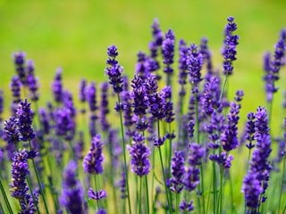

Lavender, an herb with many culinary uses, also makes a stunning addition to borders and perennial gardens, providing sweeping drifts of color from early summer into fall. With its silvery-green foliage, upright flower spikes and compact shrub-like form, lavender is ideal for creating informal hedges. You can also harvest it for fragrant floral arrangements, sachets, and potpourri.
Height:2 to 3 feet.
Flower colors:Lavender, deep blue-purple, light pink, white.
Despite its Mediterranean origin, English lavender was so named because it grows well in that country's cooler climate and has long been a staple in English herb gardens. The gray-green foliage and whorls of tiny flowers make this one of the most attractive lavenders in the garden. It’s one of the most cold-hardy varieties and the best for culinary use because of its low camphor content.
